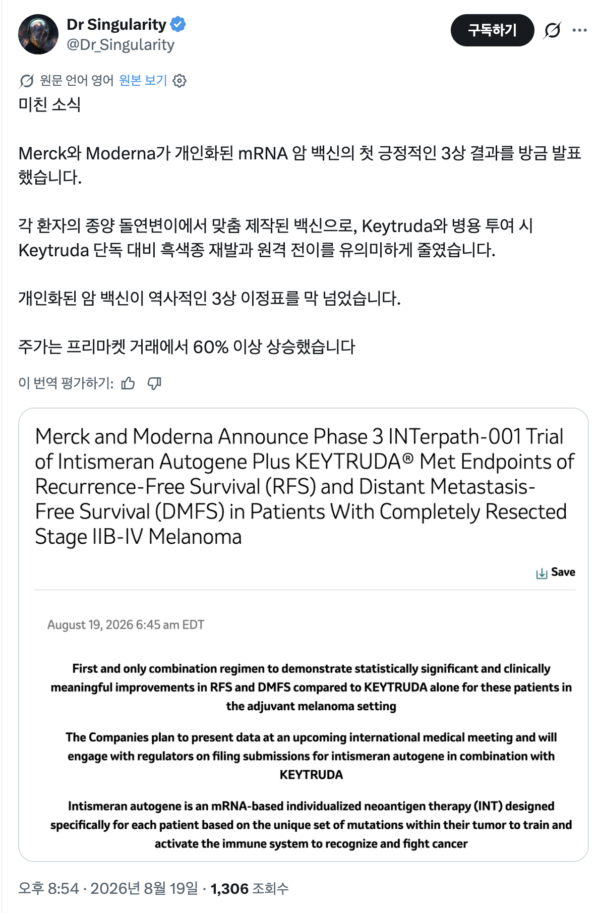
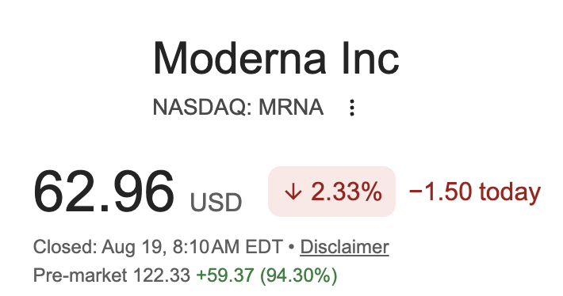

https://www.edaily.co.kr/News/Read?newsId=05277526645548960&mediaCodeNo=257
mRNA기반 암백신 임상 3상 성공했음.
구체적인 실험 결과는 아직 공개되지 않았으나 2상에선 재발률 49% 줄였다함

모더나 주가는 2배 오름

https://www.edaily.co.kr/News/Read?newsId=05277526645548960&mediaCodeNo=257
mRNA기반 암백신 임상 3상 성공했음.
구체적인 실험 결과는 아직 공개되지 않았으나 2상에선 재발률 49% 줄였다함

모더나 주가는 2배 오름
댓글
수집 당시 댓글 5개
초롱박이 · 23 시간 전
이게맞음 근데 키트루다는 부인암이나 폐암에도 많이 쓰여서 이것도 그러지않을까 일단 기대된다
백수야.. · 22 시간 전
맞긴한데 특정부위에 자란다고 다 같은 암은 아니고 종류별로 다르고 같은종류라도 돌연변이 타입에 따라 면역항암제 사용여부 결정되는데 흑색종이 특히 돌연변이가 많은 타입의 암이 많음 대장암은 보통 5퍼센트 내외에서 키트루다 사용가능한 타입 나오는데 흑색종은 아주높은확률로 키크루다 사용가능함 거기다가 운좋으면 완전관해 기대해볼수도 있고 지미카터가 90세에 전이성 흑색종 4기 진단 받고 간에 전이되고 뇌 4군데 전이 판정 받았는데 수술 방사선치료 키트루다 세개써서 완전관해판정받고 100세까지 살다가 죽음
scendo · 14 시간 전
먼소리야 키트루다 같은 면역항암제 요새 많이 씀 혹시 의학쪽 관계자임?
백수야.. · 13 시간 전
면역항암제 많이 쓴다는게 여러가지 암에 쓰인다는게 아님 결국 키트루다같은 면역관문억제제는 환자본인이 가진 t cell이 정상세포로 오인하던 암세포를 공격대상으로 인식시켜서 암세포 공격하게 만드는건데 암세포의 돌연변이 타입에따라 그대상이 정해짐 그래서 특정약물은 특정 암에만 반응확률이 높아지고 키트루다같은경우 MSI-H / dMMR 타입에 반응 할 확률이 높음 흑색종은 저런타입의 암일 확률이 높고
scendo · 13 시간 전
내가 암 치료하는 의산데 키트루다는 pembrolizumab 경쟁약제 nivolumab 그 외 durvalumab 등 엄~청 다양한 ici (immune checkpoint inhibitor) 가 나왔고 4기 암에선 특히 굉~장히 다양한 암종에서 쓰이고 너말대로 모든환자가 다 듣는건 아니라 cps score 를 보고 적응증이 결정되는건 맞는데 점차 cps 낮아도 효과있단 보고때문에 일부암, 일부약제는 2nd line, 3rd line 에선 cps 1점만 넘어도 쓰기도함 지금은 면역항암제가 안쓰이는 암종류가 드물정도인데 저 논문은 흑색종에서의 키투르다+신약 vs 키투르다의 비교였는데 저걸보고 어떻게 신약이 소수의 암종만 효과있을거라 단정지을수있는지 아직 잘이해안됨